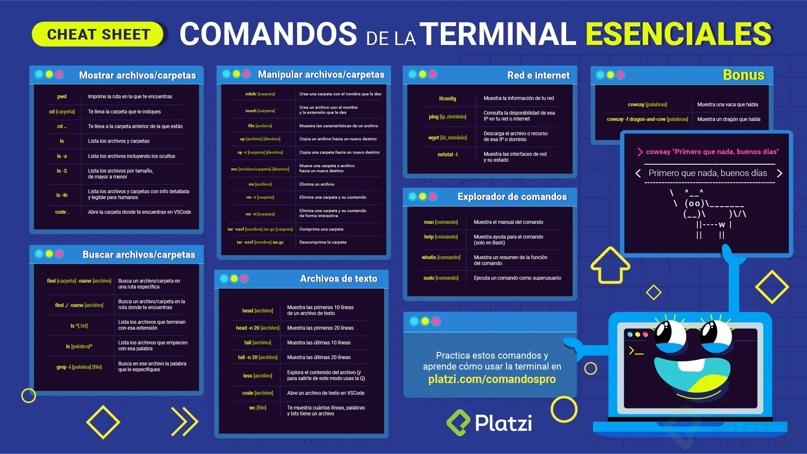

Introducción a la Terminal
La terminal (o línea de comandos) es una forma de interactuar con la computadora mediante texto. Aunque puede parecer intimidante al principio, es una herramienta muy poderosa para los desarrolladores.
¿Por qué usar la Terminal?
- Es más rápida que la interfaz gráfica para muchas tareas
- Permite automatizar tareas repetitivas
- Es esencial para muchas herramientas de desarrollo
- Funciona igual en diferentes sistemas operativos
Comandos básicos de navegación
Estos comandos te ayudan a moverte por las carpetas de tu computadora:
| Comando | Descripción | Ejemplo |
|---|---|---|
pwd |
Muestra la carpeta actual | pwd → /home/usuario/documentos |
ls |
Lista archivos y carpetas | ls → archivo1.txt carpeta1 imagen.jpg |
cd |
Cambia de directorio | cd carpeta1 → te lleva a carpeta1 |
cd .. |
Sube un nivel | cd .. → te lleva a la carpeta superior |
clear |
Limpia la pantalla | clear → pantalla limpia |
Ejemplos de uso
# Ver dónde estamos
pwd
# Ver los archivos en la carpeta actual
ls
# Ver archivos con más detalles
ls -l
# Cambiar a otra carpeta
cd Documentos
# Subir a la carpeta padre
cd ..
Consejos para principiantes
- Usa la tecla TAB para autocompletar comandos y nombres de archivos
- Usa las flechas arriba/abajo para navegar por comandos anteriores
- Si no estás seguro de un comando, usa
manpara ver su manual - Ten cuidado con
rm, no hay "papelera de reciclaje" en la terminal